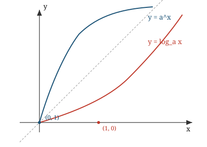

<script>if(location.hostname.endsWith('onrender.com'))location.replace('https://math-sandbox.pages.dev'+location.pathname+location.search+location.hash)</script>
<section class="theory" data-section="P23-2.2">
<h2>2.2 Logarithms to base \(a\)</h2>
<p class="src">Based on Cambridge International AS &amp; A Level Mathematics: Pure Mathematics 2 &amp; 3 Coursebook (Hugh Neill, Douglas Quadling and Julian Gilbey), Chapter 2 Logarithmic and exponential functions, printed pp.30–32 (Key point 2.2, Worked examples 2.4–2.7, Exercise 2B). Own wording and new numbers. The laws of logarithms, and the solving of more complicated logarithmic or exponential equations, are left to later subsections, as in the book.</p>
<p class="key-words"><strong>Key words:</strong> <em>logarithm to base a</em>, <em>logarithm</em>, <em>exponential</em></p>
<p>The last subsection treated logarithms to base 10. The same idea extends to other bases. This subsection is about logarithms to base a. If \(y=a^x\), then \(x=\log_a y\). Equivalently, \(y=a^x \iff x=\log_a y\). The two functions are inverses of one another.</p>
<p>For \(\log_a x\) to be defined, the base must satisfy \(a\gt 0\) and \(a\neq 1\), and the argument must satisfy \(x\gt 0\). The following identities then hold:</p>
<ul>
<li>\(\log_a a=1\)</li>
<li>\(\log_a 1=0\)</li>
<li>\(\log_a(a^x)=x\)</li>
<li>\(a^{\log_a x}=x\)</li>
</ul>
<p>A common error is writing the base and the index the wrong way round: in logarithmic form the index stands alone, and the base of \(a^x\) is the base of the logarithm.</p>
<p></p>
<script src="../../assets/widget-kinds-pkg12.js"></script>
<div class="ms-widget" data-widget="logs"><p class="ms-widget-fallback">Interactive figure: y = a to the power x and y = log base a of x.</p></div>

<div class="worked-example">
<h4>Worked example 1: Converting to logarithmic form</h4>
<p class="src">Book: Worked example 2.4, p.30; new numbers</p>
<p>Convert \(2^5=32\) to logarithmic form.</p>
<ol class="steps">
<li>The base is \(2\) and the index is \(5\), so the index stands alone as the logarithm: \(5=\log_2 32\). <span class="mark">M1 A1</span></li>
</ol>
<p class="final"><strong>Answer:</strong> \(5=\log_2 32\)</p>
</div>
<div class="worked-example">
<h4>Worked example 2: Exact values</h4>
<p class="src">Book: Worked example 2.6, p.31; new numbers</p>
<p>Find the value of \(\log_4 64\) and of \(\log_5\bigl(\dfrac{1}{125}\bigr)\).</p>
<ol class="steps">
<li>\(\log_4 64=\log_4(4^3)=3\), because \(64=4^3\). <span class="mark">B1</span></li>
<li>\(\log_5\bigl(\dfrac{1}{125}\bigr)=\log_5(5^{-3})=-3\), because \(\dfrac{1}{125}=5^{-3}\). <span class="mark">B1</span></li>
</ol>
<p class="final"><strong>Answer:</strong> \(3\) and \(-3\)</p>
</div>
<div class="worked-example">
<h4>Worked example 3: From a logarithm back to a power</h4>
<p class="src">Book: Worked example 2.5, p.31; new numbers</p>
<p>Solve \(\log_2 x=6\).</p>
<ol class="steps">
<li>Converting to exponential form gives \(x=2^6=64\). <span class="mark">M1 A1</span></li>
</ol>
<p class="final"><strong>Answer:</strong> \(x=64\)</p>
</div>
<h3>Quick check</h3>
<div class="quick-check" data-q="QC1">
<p>Find the value of \(\log_3 81\).</p>
<p class="final"><strong>Answer:</strong> \(4\)</p>
</div>
<div class="quick-check" data-q="QC2">
<p>Solve \(\log_2 x=6\).</p>
<p class="final"><strong>Answer:</strong> \(64\)</p>
</div>
<div class="quick-check" data-q="QC3">
<p>Find the value of \(\log_5\bigl(\dfrac{1}{25}\bigr)\).</p>
<p class="final"><strong>Answer:</strong> \(-2\)</p>
</div>
</section>
